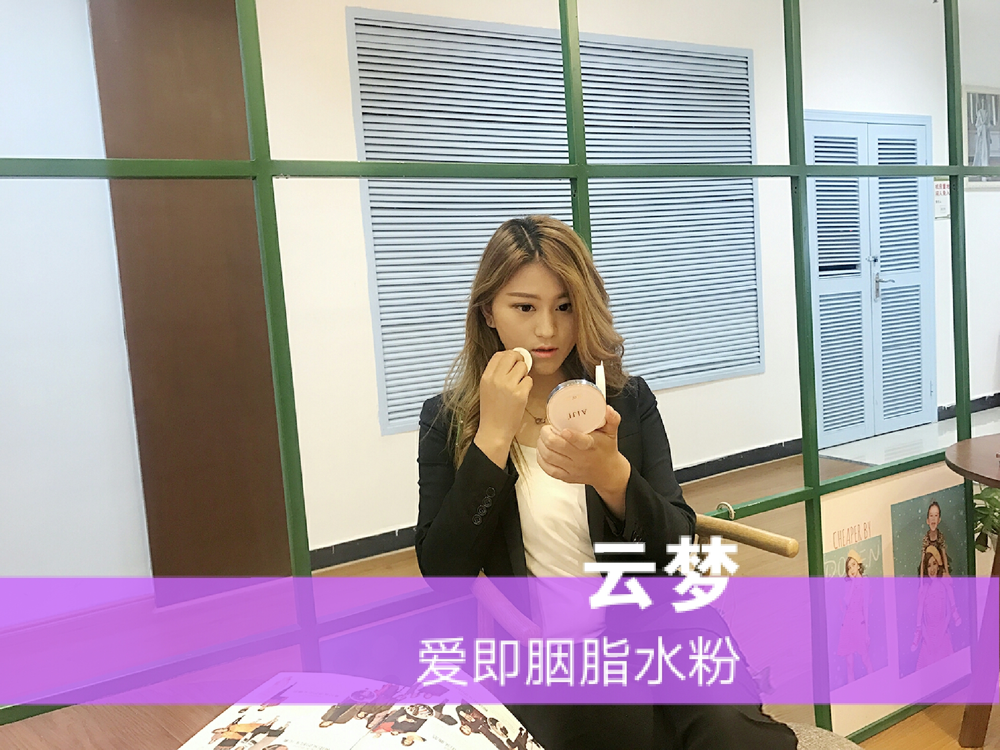
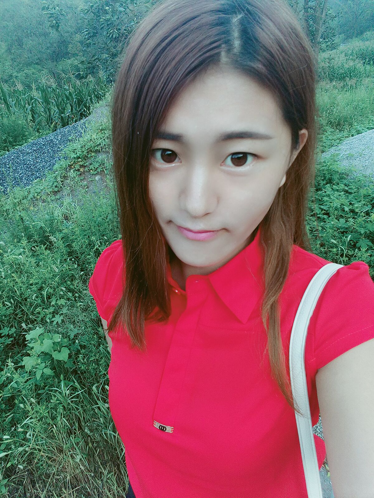
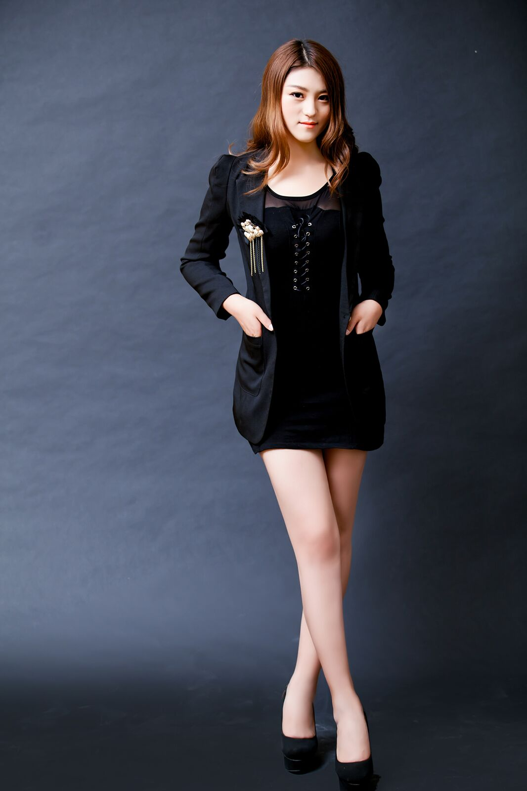

自我简介
作者：孙云梦
亲爱的你好，我叫孙云梦，河北保定人，95年，本一学生。还有另外一个身份，创业者，微商自己创业，现在代理的主要有杜润奶皂，杜润初肤（3A企业，十二五诚信品牌，明星沈凌主理，国际巨星黄晓明代言）,还有盛妆爱即（cctv上榜品牌战略合作伙伴）。从屏蔽微商到成为微商到感谢微商，我今天要说的都是我真实的感受，没有套路，满满真诚芸芸众生中太多间歇性满腔热血，长时间迷茫犯懒的人，遇到微商前，上了大学后，我就是其中一员。我真的特别感谢我的老大鸭鸭，和我的团队我的公司她们让我知道，一个明确的目标和坚持不懈的努力真的太重要了，想说的话拖着不说，久了自然心事重重；想做的事拖着不做，久了自然压力重重。当拖延成了习惯，疲惫不堪就成了常态。每个人都有每个人的不容易，所有的期许，不屑，赞美，嘲讽，都应该转化为我们的动力 千里之行，始于足下，合抱之木，生于毫末，行动永远就是打败焦虑最好的办法。 接下来伴随着几个问题为大家介绍我的成长史，还是那句话，亲身走过，没有套路，满满真诚………

个人经历
时光轴
- 2015年10月开始做微商，2个月升级7500初肤二级。
- 2016年2月打款12500升级初肤一级(搭上了我的半年生活费并且借了钱，当时妈妈深夜给我把钱找出来，我就偷偷在被子里哭,心里暗自发誓。).
- 2016.3月加推奶皂，4月到6月，一直升级，从1箱到3箱到10箱到20箱，7月到11月升级奶皂18万总代 出货百箱（之前门槛108000），邮费从 几十到几百到单次上千一直帮助代理出货，扩建团队，带更多人活出自己。
- 2016.11月 参加江苏徐州拓展训练营，带8个代理，专业狼牙大队培训，让我们都懂得了很多道理，团队凝聚力更强。还有线下分享，认识到更多大咖，我团队的人真的太牛。
- 2016.12 参加公司级的盛会，杜润超级梦年度盛典，地点在北京雁栖湖国际会展中心，APEC国家间领导会议举行地，北京国际电影节举办地，出席嘉宾，国际巨星黄晓明，歌坛一姐黄小琥，甜心教主王心凌，超帅MIC男团，多家媒体报道，可以在网上搜到。
- 2017.2月拿下盛妆爱即8万官方，继续预定27万CEO格局越来越大，收入也越来越高。 2016.7月 作为几万人的px联盟中的前200强，参加安徽合肥巅峰会议，带领3个代理，吃住全包，住5星级酒店，出席嘉宾有魏一宁，王小强，夜店女王，编辑大咖，这是我第一次出远门。
- 2017年 2月作为棒家业绩第一 去参与美丽俏佳人录制。
- 2017年 3月举办本地代理聚会 线下交流培训。
- 2017年 4月底五月初游玩深圳、广州、香港，作为公司优秀经销商去泰国国外游。

遇到的问题
问题
- 孙云梦 你怎么就做了微商了 首驱因素当然是没钱 然后就是一颗爱折腾的心。我渴望的大学不是死读书，而是全方面多方位发展，学生会和社团不是我想要的成长环境，班委也是谋了一个小职，不想深入。在兼顾学习的同时，在别人吃喝玩乐追剧的时候，大一和大二上半年整整一年半都在做廉价劳动力，我的4个多小时也就值15元加2顿饭。一个月省省省最多只能剩300元左右，我依然舍不得去买好看的衣服舍不得去旅游。 说实话，我真的不虚荣。我知道父母难处，生活费从来不多要，基本的保障就行，但是上了大学，又在美女如云的经贸，见识的也多了，不免自卑，一颗想变得越来越好的心，蠢蠢欲动，没有背景，没有家世，没有过人的容貌，我能拼的只有我自己。阴差阳错，大一时练英语认识了社团学姐，脱协副会长，凡姐，也是我当时唯一没有屏蔽的微商。观察一年半后，看她自己交学费，自己出去旅游，自己养活自己还给父母钱真的特别羡慕。 于是，人生转折点来了。我做了一个我以前想都不敢想的决定，自己创业，做微商。
- 你最开始卖的好吗 最开始一个月由于没有经验没有人脉，又不想主动去推，卖的并不好，但是就是不甘放弃，查找自己问题，根据上家和团队教我的方法，微信从无到有，qq从几十人到几百人，每天都去学习，都去群里加人，也有被拒绝难过到偷偷掉眼泪的时候，当时的产品都自己用过，水乳，卸妆喷雾，气垫自己光拍自用小视频就废掉有一套，从开始的不自信，羞涩，渐渐的变得大方自信，到第二个月就把手里1000元的货出完，并且组建了自己小团队，从几个人到几十人再到几百人。哪有什么奇迹，那只是努力的另外一个名字。
- 你父母家人朋友同意你做微商吗 开始那是百分之一万的不同意，我家里两个哥哥，父母50多岁，加上一些负面新闻太多了，父母认为我就是不务正业，甚至被别人蛊惑，每当家人这样说我的时候，我都特别委屈，真的我的大一大二可以说一直过的比较紧，从来没有放纵过我自己，别人家的孩子只管跟父母要钱，不用自己那么辛苦，我如果家境特别好的话，我又何必去自己折腾，再说真的是利用自己休息娱乐的时间去做兼职去创业，怎么就是不务正业了。我是一个特别在乎父母想法的人，绝对不想他们伤心，从小就是乖乖女，学习成绩也很好，小考中考都是班级第一成绩进入重点初高中，高中复读时最差是年级第六，年级前几都经常，每次看班里排名直接看谁是第二，第一不出意外的话一定是我，但是高考是我最差的成绩，上了本省一个本一。命里有时终须有，命里无时莫强求，我信命，但是不认命。只想说，态度，有了态度，你做啥都不会差，像我高中班主任说得，云梦，你这孩子，在哪儿都会发光。 后来不断努力，也拿出了成绩，家里的态度转变，我妈妈甚至会给我出主意提高业绩，提醒我开课培训。还记得第一次给我妈妈6000元零花钱，自己解决生活费，办理助学贷款，以后自己还，给家里开支补贴，给家里人买礼物，付出对于我开说比索取来得幸福。
- 微商到底是什么，是不是传销 这个问题很有必要回答一下，微商就是自己选择代理可靠的品牌，利用微信qq等网络平台，把东西分享卖出去，也有很多代理话费卡，电影票，旅游门票的，当然我做的比较正规系统，前面提过公司信息。省去开实体的花费与分险，选择一个好品牌，好上家，好团队，会给你宝贵经验，大力推广以及专业的比如护肤知识的培训。我开始做的时候，为什么选择观察一年半，因为自己也是心存疑惑，觉得做微商不像是正经人做的事，觉得脸上挂不住，面子抹不开，但是时代变了，不能固步自封，而且做微商真的是踏踏实实努力，卖的东西性价比高，诚信经营，售后比淘宝还要好，在利用网络单纯的娱乐时你可想过这巨大的商机？微商当然不是传销，传销是没有产品依托，告诉你投资1万赚100万，限制你的人身自由，完全性质的不同。相信真诚的努力总会得到尊重，我们自立自强，不偷不抢，造福顾客，问心无愧。